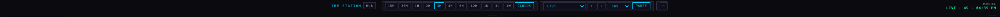
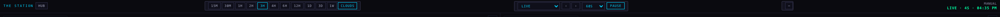
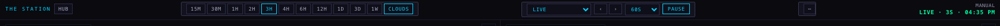
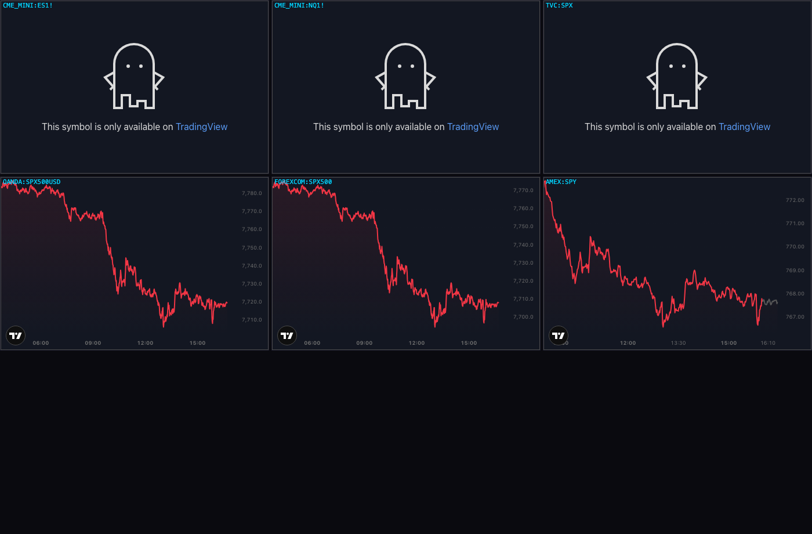
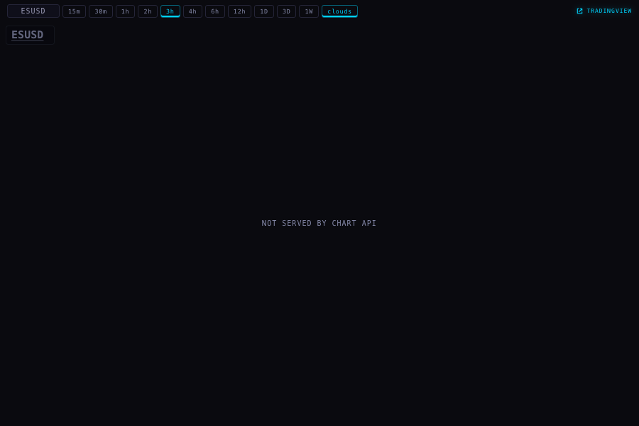
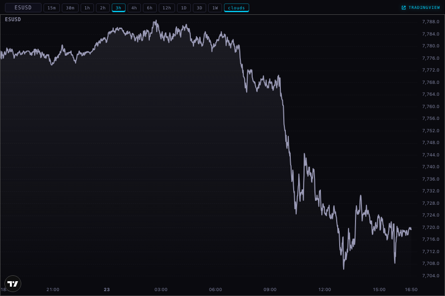
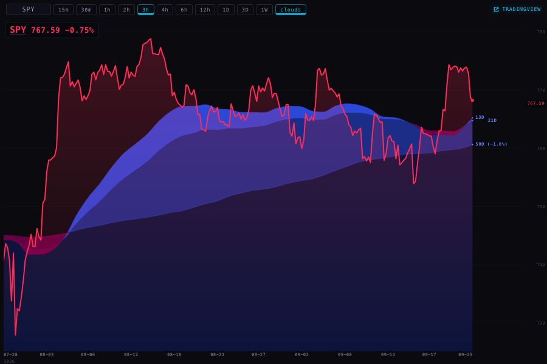
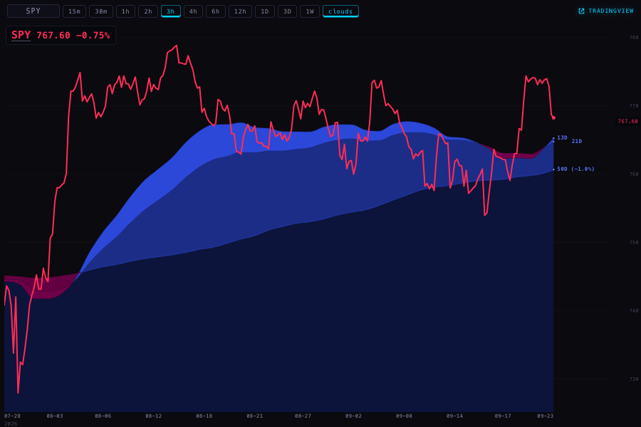
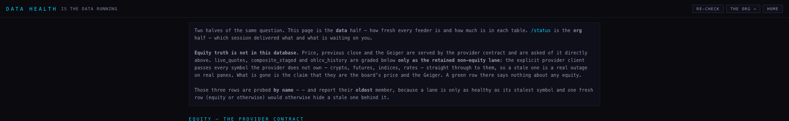
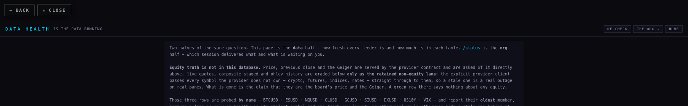

Station fixes · 23 September
Branch station/fixes-20260923 · built on Station production 12822db · nothing deployed, nothing pushed.
1 · The dock no longer bunches up
You said: "There's a ton of space to the left of the Station and to the right of the more controls." You were right, and it was measurable. The strip was centred, so on a wide window everything packed into the middle:
| Window width | Empty space left of THE STATION — before | After | Width the strip uses |
|---|---|---|---|
| 2560 (the iMac) | 848 px | 8 px | 66% → 99% |
| 1920 | 528 px | 8 px | 72% → 99% |
| 1680 (the MacBook) | 408 px | 8 px | 75% → 99% |
There were two causes. The strip was centred, and the readout at the right (LIVE · 4S · 04:35 PM) floated above the row rather than sitting in it — so the fitting code had to reserve twice the readout's width before the strip would fit, and shrank it early. The readout is now the row's right-hand item and the sections spread across the whole strip. The phone's sideways-scrolling strip is untouched.



2 · Every pane is served
You said: "I'm still seeing 'data not served by chart API' for a couple of great things." It was exactly a
couple. I asked the chart API for every symbol the Station shows, at all eleven ranges the deck offers
(15m, 30m, 1h, 2h, 3h, 4h, 6h, 12h, 1D, 3D, 1W) — 143 requests, recorded in api-coverage.json.
| Symbol | Page · pane | What it said | Where it comes from now |
|---|---|---|---|
| ESUSD (S&P 500 futures) | Deck futures scene; /chart/ pane | NOT SERVED BY CHART API at all 11 ranges (404 SYMBOL_NOT_TRACKED) | TradingView — OANDA:SPX500USD, the nearest series that draws |
| NQUSD (Nasdaq futures) | Deck futures scene; /chart/ pane | NOT SERVED BY CHART API at all 11 ranges | TradingView — OANDA:NAS100USD |
| CLUSD, GCUSD, SIUSD, DXUSD, BTCUSD, US10Y, DXY, VIX | Macro cross-asset scene | Nothing — all served, bars at every range | Chart API, unchanged |
That last row corrects an earlier note of ours: a lane on 22 September recorded CLUSD as not carried and VIX·3h as refused. I re-measured both today and the API now answers with bars for both, at every range. Nothing needed doing.
Why the futures show an index and not the contract
TradingView will not put CME futures inside an embedded chart. I tried six symbols side by side in real frames:
CME_MINI:ES1!, CME_MINI:NQ1! and TVC:SPX all answer with the ghost —
"This symbol is only available on TradingView" — the same wall VIX hit. What does draw is the index series.
So the pane carries the nearest series: the S&P 500 at 7,710–7,780 while ES was trading 7,7xx, and the
NASDAQ 100 at 30,400–30,760. It is the same market a few points apart, not the same instrument, and the pane's
tooltip says "nearest series". This is decision 1 below.



3 · No more green and red shading on the line charts
It was a gradient filled under the price line — the direction colour at about a quarter strength fading to nothing, green when the symbol was up, red when it was down. It is gone from both copies of the chart page. The clouds are untouched: they are drawn separately, before the line, and they are yours.


4 · The X feed pauses under your mouse
The pane was sending a pause when your pointer arrived. It sent it once. The extension treats a pause as a half-second lease — it lets the feed scroll again unless the pane keeps asking. So the feed stopped for half a second and crawled on under a pointer that had not moved. That is exactly what you saw.
The pane now renews the hold every 180 ms while the pointer is inside, and releases it once when the pointer leaves, when the window loses focus, or when the pane is hidden. It also takes the hold on any movement inside the pane, so a pointer already resting there when the picture arrives still pauses it. The extension is not changed — this uses the pause control it already has, so there is nothing to reinstall on either Mac.
One more thing this uncovered: the pane's status word (live, paused, reconnecting) was being written into an element that was permanently hidden, so you could never see which state it was in. It now shows.
5 · The X pane heals itself
On the iMac you had the live controls and no moving picture. The pane could not tell the difference between a stream that was attached and a stream that was alive: the old check only fired when the stream went inactive, and a frozen capture never does. The pane now watches for two signs of life — a new video frame, and a new crop message from the extension. If neither arrives for six seconds it says so on that status line and asks the extension for a fresh capture, then re-announces itself. It waits twelve seconds before trying again, and after three tries it stops and says "no picture for 40s · the X window may be closed" instead of looping quietly.
Tested by killing the frames in a harness: eleven tests drive that decision directly — nothing to heal when no stream is attached, nothing when frames are arriving, a crop alone is enough to count as alive, a fresh pane gets its six seconds before anything is called broken, one relink then a cooldown, and the give-up line after three.
The button that said "pair iPad" now says "iPad link", because it is not an error.
6 · A way back on the four pages you open by hand
/registry/, /health/, /handoff/ and /youtube/ now carry the same grey
BACK / CLOSE pair the Hub uses. BACK returns to the page you came from; CLOSE returns to the Station deck. It sits in
the page's own flow at the top — my first attempt pinned it over the corner and it covered the health page's own
heading, which I could see in the screenshot, so I moved it. Wall screens stay clean.


Where each number on this page comes from
- The dock measurements — read out of a real Chrome window at 2560, 1920, 1680 and 390, from the live layout of the strip. Raw numbers in
dock-measurements.json. - Which symbols are served — 143 live requests to the chart API,
/candles, one per symbol per range. Raw answers inapi-coverage.json. - The prices in the pictures — the live chart API and, for the two futures panes, TradingView's own widget.
- The half-second lease — read out of the installed extension's own code (version 0.7.18), not guessed.
What could be wrong
- The futures panes show the index, not the contract. The shape and the level are close, the number is not identical. If you trade off that pane's exact price, don't.
- The pause and the self-healing were tested against the extension's code and a harness, not against your iMac with a live X window — I am not allowed near that machine, and the picture only exists where the extension is running.
- The dock now spreads the sections apart on a very wide window. It uses the space, which is what you asked for, but it is a bigger change in look than the other five.
- The chart API answered everything today. If a symbol goes missing tomorrow, the pane will say so in words again — only ESUSD and NQUSD have a TradingView fallback.
What I did not do
- Nothing is deployed or pushed. The branch sits on this MacBook.
- The extension is unchanged at 0.7.18 — no reinstall on either Mac.
- The iMac was not touched in any way.
station-shells/x-v1, an older copy of the X pane that nothing currently mounts, was left alone.- The gradient fills in
visuals/gallery/andtemplates/sector-rotation.htmlwere left alone — they are not the Station's line charts. - I did not change the clouds, the timeframes, the scenes, the Geiger, or any price the API serves.
- I did not sweep all 36 Station pages for empty panes — I followed the two you were actually seeing and proved the rest of the symbol set is served.
Tests
Production 12822db fails 18 of 438. This branch runs 461 tests: 443 pass, 18 fail — the same
eighteen, by name. Twenty-three are new, covering the healing decision, the renewal of the hold, the missing status
line, the button's name, the absent shading, the two TradingView panes, the way back on four pages, the wall screens
staying clean, and the dock spreading. One existing test was updated on purpose: it required the shading to be painted
between the clouds and the line, and now requires that nothing is painted there at all.